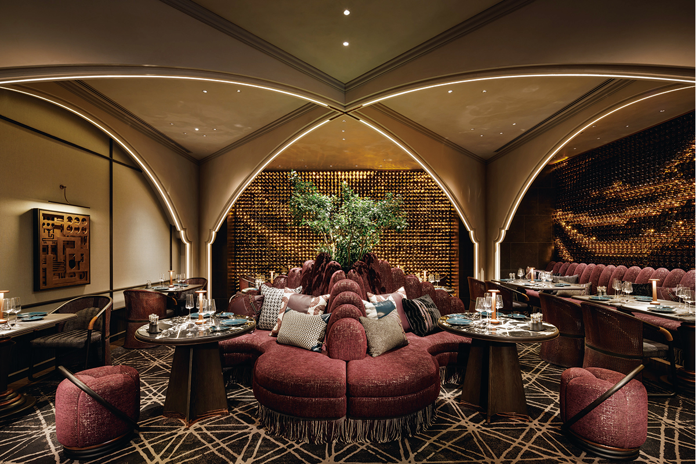
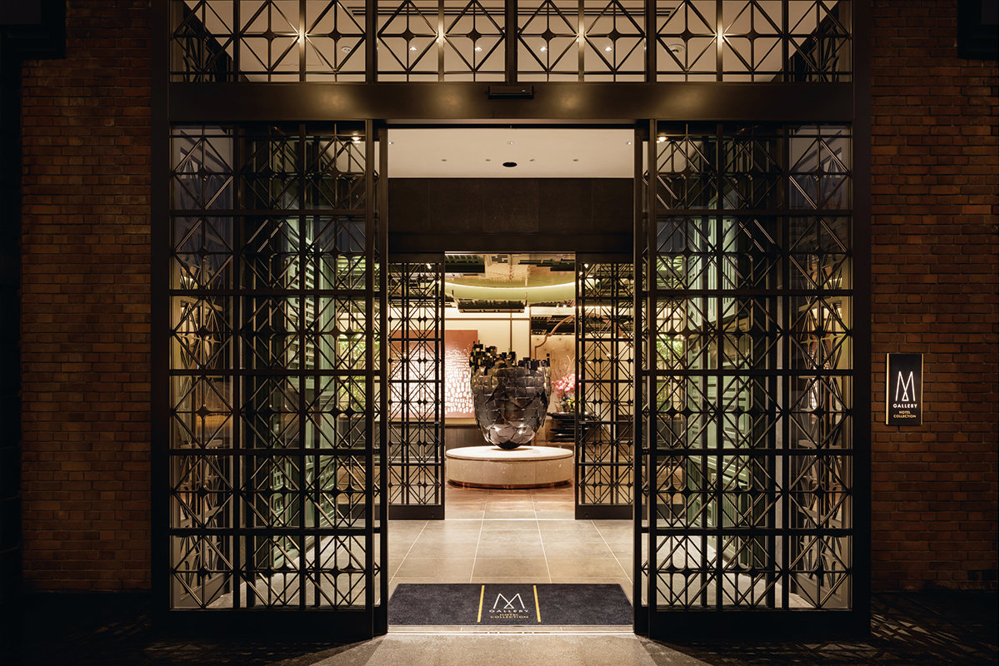
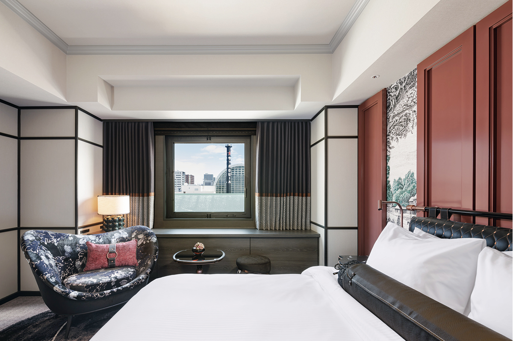
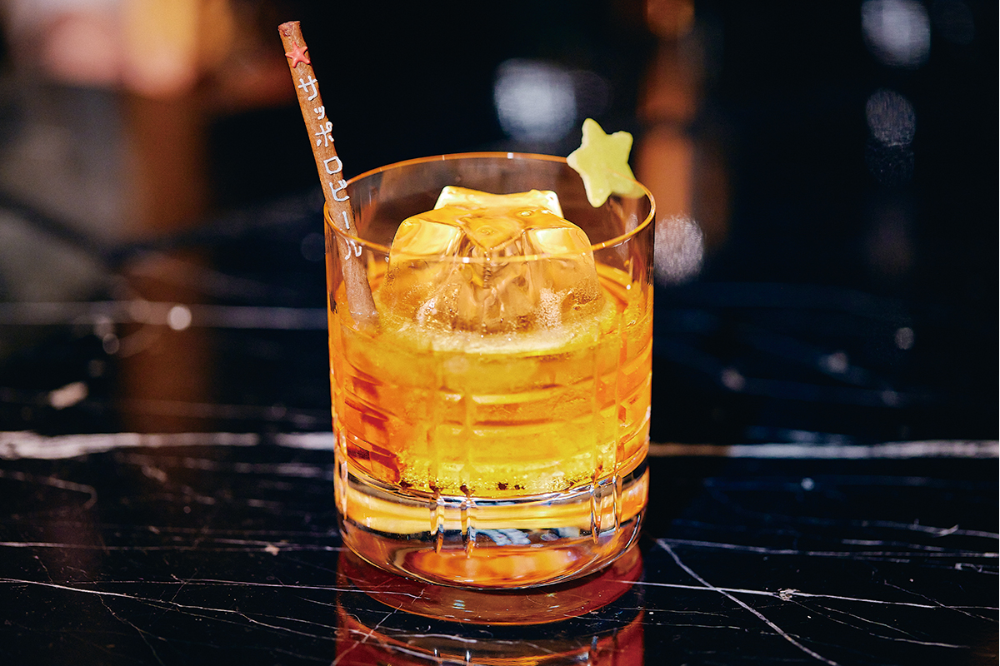
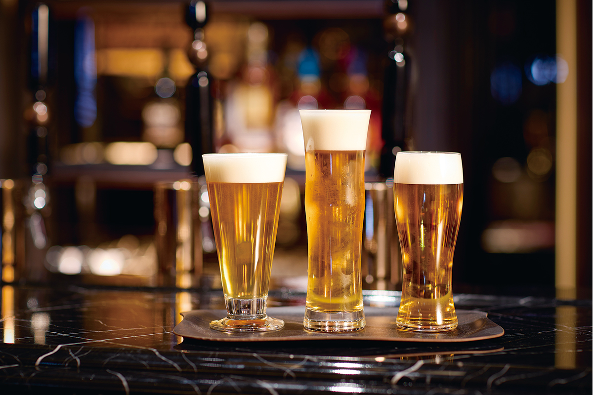

Префектура Хоккайдо · Саппоро · отель
Hotel Sosei Sapporo MGallery Collection: ночь в доме эпохи освоения Хоккайдо

Освоение Хоккайдо и пивоварение шли в Саппоро рука об руку. Hotel Sosei Sapporo MGallery Collection рассказывает эту историю через архитектуру, интерьер, еду и напитки, так что её можно буквально прожить за одну ночь.
Место
Квартал, где японцы впервые сварили пиво
Река Сосэй пересекает центр Саппоро с севера на юг. Восточный берег когда-то был промышленным сердцем города, и здесь до сих пор сохранилась пивоварня, где пиво впервые сварили сами японцы. В 2024 году в этом квартале открылся Hotel Sosei Sapporo из MGallery Collection, коллекции бутик-отелей группы Accor, одной из крупнейших гостиничных сетей мира.
Каждый отель MGallery строится вокруг истории, которая есть только у его места. В Саппоро такой историей стали Управление по освоению Хоккайдо (Кайтакуси), ведомство, которое занималось заселением и развитием острова, и пиво. Тема отеля звучит так: «особняк эпохи Кайтакуси, родившийся заново в XXI веке».

Интерьер
Западная гостиная и японские покои
Следы Кайтакуси и пивоварения рассыпаны по всему зданию. Номера устроены по образцу домов чиновников той эпохи: в них соединялись комната в западном стиле, где принимали гостей, и японская комната для повседневной жизни. В отеле это сочетание сделано современным языком.

В ресторане стоит присмотреться к стенам: арт-инсталляция собрана из пивных бутылок. Здесь сходятся эпохи и культуры, а вместе с ними природа Хоккайдо и история его освоения.
Бар
Полярная звезда в бокале
Символом Кайтакуси была пятиконечная звезда. Под ней в баре подают фирменный коктейль «Сосэй Поларис», придуманный по мотивам Полярной звезды.


Вся карта напитков составлена из того, что дарит Хоккайдо. Обязательно попробуйте разливное пиво «Кайтакуси бакусю»: кроме этого бара, его наливают лишь в нескольких местах, например в пивном саду Sapporo Beer Garden.
Hotel Sosei Sapporo MGallery Collection
- Адрес
- префектура Хоккайдо, Саппоро, район Тюо, Кита-2-дзё Хигаси, 3, Sapporo Factory, западный корпус
- Телефон
- +81 11-242-1111
- Номера
- 118
- Цены / Вход
- от 34 600 иен за ночь с завтраком, с налогом и сервисным сбором; завтрак шведский стол, японская и западная кухня
- Заезд / выезд
- 15:00 / 11:00
- Как добраться
- около 5 минут пешком от станции метро Басу-сэнта-маэ, около 7 минут от станции метро Саппоро; около 5 минут на такси от станции JR Саппоро